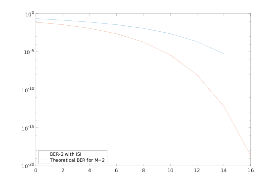

Contents
% A skeleton BER script for a wireless link simulation clear all;clc; close all
part a
% % For the final version of this project, you must use these 3 % % parameter. You will likely want to set numIter to 1 while you debug your % % link, and then increase it to get an average BER. % numIter = 10000; % The number of iterations of the simulation % nSym = 1000; % The number of symbols per packet % SNR_Vec = 0:2:16; % lenSNR = length(SNR_Vec); % m_ary = [2, 4, 16]; % The M-ary number, 2 corresponds to binary modulation % % %chan = 1; % No channel % chan = [1, 0.2, 0.4]; % %%chan = [0.227 0.460 0.688 0.460 0.227]'; % Not so invertible, severe ISI % % tic; % % %we use 300 training bits in this case % trainlen = 300; % displayStr = ["BER-2 with ISI","BER-4 No ISI", "BER-16 No ISI"]; % % for it=1:length(m_ary) % M = m_ary(it); % berVec = zeros(numIter, lenSNR); % for ii = 1:numIter % % msg = randi([0, M-1], nSym*(log2(M)), 1); % Generate random bits % % New bits must be generated at every % % iteration % % % If you increase the M-ary number, as you most likely will, you'll need to % % convert the bits to integers. See the BIN2DE function % % For binary, our MSG signal is simply the bits % % % We reshape bits so that there are a proper number of bits per row, % % Then we convert each row to decimal and move on. % %msg = reshape(bits,[nSym, log2(m_ary)]); % %msg = bi2de(msg,'left-msb'); % %msg = bits; % bits = de2bi(msg, 'left-msb').'; %transpose here % bits = bits(:); % % for jj = 1:lenSNR % one iteration of the simulation at each SNR Value % tx = qammod(msg,M); % BPSK modulate the signal % % %if m_ary == 4: % % if M == 2 % if isequal(chan,1) % txChan = tx; % txNoisy = txChan; % else % txChan = filter(chan,1,tx); % Apply the channel. % txNoisy = awgn(txChan,SNR_Vec(jj)); % Add AWGN % % %equalizer % %lineq = comm.LinearEqualizer('Algorithm','LMS', 'NumTaps',6,'StepSize',0.01); % %p = lineq(txNoisy, tx(1:trainlen)); % eq1 = lineareq(6, lms(0.01)); % txNoisy = equalize(eq1,txNoisy,tx(1:trainlen)); % Equalize. % %txNoisy = filter(eq1.weights, 1, txNoisy); % reset(eq1); % end % else % txNoisy = awgn(tx + (eps*1j), SNR_Vec(jj) + 10*log10(log2(M)),'measured'); % %channel = comm.AWGNChannel('NoiseMethod', ... % % 'Signal to noise ratio (SNR)', 'SNR', SNR_Vec(jj)); % %txNoisy = channel(tx); % end % rx = qamdemod(txNoisy,M); %,'OutputType', 'integer'); % Demodulate % %rxMSG = de2bi(rx, [], 2); % % % Again, if M was a larger number, I'd need to convert my symbols % % back to bits here - convert each row to its binary sequence % % the transpose and the rx(:) is housekeeping - conceptually we are % % taking each row, appending it after the previous row, but we do % % this transposed since we are working with columns % rxTmp = de2bi(rx, 'left-msb').'; %transpose here % rxMSG = rxTmp(:); % % % Compute and store the BER for this iteration % % We're interested in the BER, which is the 2nd output of BITERR % [~, berVec(ii,jj)] = biterr(bits(trainlen+1:end), rxMSG(trainlen+1:end)); % % end % End SNR iteration % end % End numIter iteration % % % Compute and plot the mean BER % ber = mean(berVec,1); % % figure(it); % semilogy(SNR_Vec, ber, 'DisplayName', displayStr(it)) % hold on; % % if M == 2 % berTheory2 = berawgn(SNR_Vec,'psk', 2,'nondiff'); % semilogy(SNR_Vec,berTheory2,'DisplayName', 'Theoretical BER for M=2') % legend('Location', 'southwest') % elseif M == 4 % berTheory4 = berawgn(SNR_Vec,'qam', 4,'nondiff'); % semilogy(SNR_Vec,berTheory4,'DisplayName', 'Theoretical BER for M=4') % legend('Location', 'southwest') % elseif M == 16 % berTheory16 = berawgn(SNR_Vec,'qam', 16,'nondiff'); % semilogy(SNR_Vec,berTheory16, 'DisplayName', 'Theoretical BER for M=16'); % legend('Location', 'southwest') % end % % end % % fprintf('Part A: '); % toc
part b
tic; numIterations = 10000; % The number of iterations of the simulation numSymbols = 1000; numTraining = 150; SNR_Vec = 0:2:16; SNRlen = length(SNR_Vec); chan = [1, 0.2, 0.4]; tic; M = 2; codeWordLen = 15; msgLen = 7; numWords = ceil(numSymbols/codeWordLen); trainingBits = (numTraining/codeWordLen) * msgLen; % should always be int. Error check? BERvec2 = zeros(numIterations, SNRlen); enc = comm.BCHEncoder(codeWordLen, msgLen); dec = comm.BCHDecoder(codeWordLen, msgLen); parfor ii=1:numIterations %generate numSymbols number of symbols: this is our message, not %necessarily in binary msg = randi([0, M-1], msgLen * numWords, 1); %encode some stuffs msg_enc = step(enc, msg); %msg_enc = encodeMsg(msg, codeWordLen, msgLen); for jj=1:SNRlen tx = qammod(msg_enc, M); if isequal(chan, 1); txChan = tx; % Apply the channel txNoisy = txChan; % "add noise" else txChan = filter(chan,1,tx); % Apply the channel. txNoisy = awgn(txChan,SNR_Vec(jj)); % add noise %make the eq %Some previous attempts %lineq = comm.LinearEqualizer('Algorithm','LMS', 'NumTaps',6,'StepSize',0.01); % doesn't work on matlab 2018a %eq1 = lineareq(6, lms(0.001)); %txNoisy = filter(eq1.weights, 1, txNoisy); eq1 = dfe(12,6, lms(0.01)); eq1.SigConst = qammod(0:M-1, M, 'UnitAveragePower', true); eq1.ResetBeforeFiltering = 0; txNoisy = equalize(eq1,txNoisy,tx(1:numTraining)); % Equalize. reset(eq1); % clean up - to be removed? end rx = qamdemod(txNoisy, M); %rxTmp = de2bi(rx, 'left-msb').'; %transpose here %rxMsg = rxTmp(:); % #tb/15 = #sets % (#tb % 15) - 8 = # of extra. If negative, set 0 %dec_msg = decodeMsg(rx, codeWordLen, msgLen); dec_msg = step(dec, rx); [~, BERvec2(ii,jj)] = biterr(msg(trainingBits+1:end), dec_msg(trainingBits+1:end)); end end ber2 = mean(BERvec2,1); % grab last non zero value ber2(find(ber2,1,'last')) figure; semilogy(SNR_Vec, ber2, 'DisplayName', "BER-2 with ISI") hold on; berTheory2 = berawgn(SNR_Vec,'psk', 2,'nondiff'); semilogy(SNR_Vec,berTheory2,'DisplayName', 'Theoretical BER for M=2') legend('Location', 'southwest') fprintf('Part B: '); toc
ans = 1.5038e-06 Part B: Elapsed time is 529.089333 seconds.